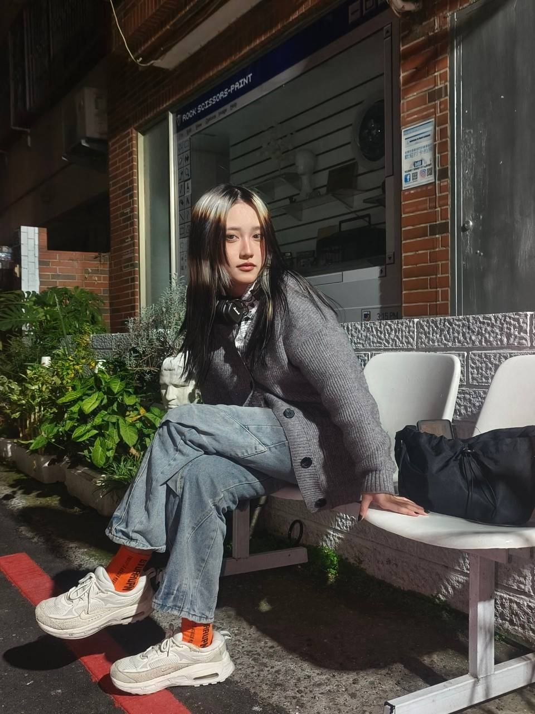
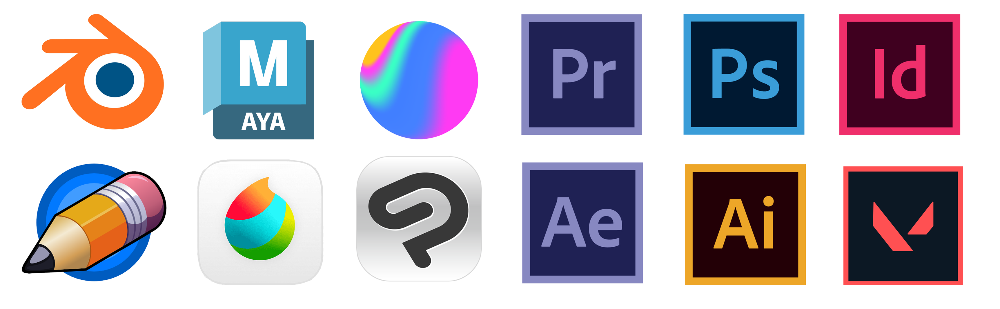

關於我
✮˚ ⋅🍒 !! ₊‧ 哈囉各位好，我是曾群aka冰淇淋獵手 於3.26登入慶記之都伺服器 現年20y ‧₊ !! 🍒 ⋅ ˚✮
高中畢業於台中的明道廣設科，現在在 TUT 擔任厭世動畫人。
目前設計怠惰但還是有一些無意中累計下來的作品可以看
感覺沒幹嘛but每天都過勞，興趣是睡到掛 ᶻ𝘇 𐰁 聽各種樂團音樂等等 𓂃 ࣪⋆💿˚ ༘
特長是講話平淡到聊天都像是在講報告。
基本的簡報製作排版、手繪電繪、2D動畫、音效剪輯、3D建模等等(現在又會基礎網站程式了ㄏ) 都略懂一二
是個每種都學但都不太精通的多用途輔助角色(百變怪 𐔌˙. ?) 還請多指教ㄙㄟˋㄙㄟˋ

我曾接觸過的部分相關軟體

每天ㄉ精神狀態be like:
(無能為力的對這個世界又愛又恨)
⠀⠀⠀⠀⠀⠀⠀⠀⠀⠀⠀⠀⠀⠀⠀⠀⣠⣤⣄⠀⠀⠀⠀⠀⠀⠀
⠀⠀⠀⠀⠀⠀⠀⠀⠀⠀⠀⠀⠀⠀⠀⠀⠀⢀⣾⠋⠀⠹⣷⡀⠀⠀⠀⠀⠀
⠀⠀⠀⠀⠀⠀⠀⠀⠀⠀⠀⠀⠀⠀⠀⠀⠀⢸⡇⠀⠀⠀⢹⡇⠀⠀⠀⠀⠀
⣿⡇⠀⠀⠀⠸⣿⠀⠀⠀⠀⠀
⠀⠀⠀⠀⠀⠀⠀⠀⠀⠀⠀⠀⠀⠀⠀⠀⠀⢻⡇⠀⠀⠀⠀⣿⣠⣤⣤⣄⠀
⠀⠀⠀⠀⠀⠀⠀⠀⠀⠀⠀⠀⠀⠀⠀⠀⣀⣸⣧⠀⠀⠀⠀⣿⡏⠀⠈⣿⡆
⠀⠀⠀⠀⠀⠀⠀⠀⠀⠀⠀⠀⠀⠀⢰⡾⠉⠉⠟⠀⠀⠀⠀⠉⠁⠀⠀⢹⡇
⠀⠀⠀⠀⠀⠀⠀⠀⢠⣶⣦⠀⠀⠀⢸⣧⠀⠀⠀⠀⠀⠀⠀⠀⠀⠀⠀⣿⠇
⣠⣄⠀⠀⠀⠀⠀⢀⣾⠁⢹⣧⠀⠀⢈⡿⠀⠀⠀⠀⠀⠀⠀⠀⠀⠀⣸⠏⠀
⣿⠛⢷⣤⣤⡴⠶⠾⠃⠀⠀⣿⢀⣴⠟⠁⠀⠀⠀⠀⠀⠀⠀⠀⣀⣼⠏⠀⠀
⢻⡆⣀⡀⠀⠀⠀⠀⣀⣀⠀⣿⡟⠁⠀⠀⠀⠀⠀⢀⣠⣤⠶⠞⠋⠁⠀⠀⠀
⠸⣿⡿⠟⣿⣄⡾⠟⡛⢓⣿⠋⠀⠀⠀⣀⣤⡶⠞⠛⠉⠀⠀⠀⠀⠀⠀⠀⠀
⠀⠹⣷⣼⣁⣽⣧⣽⠿⠋⢁⣠⣴⠶⠛⠉⠀⠀⠀⠀⠀⠀⠀⠀⠀⠀⠀⠀⠀
⠀⠀⣠⡿⠛⠉⠁⠀⠀⠰⣯⣁⣠⠴⠛⢻⡆⠀⠀⠀⠀⠀⠀⠀⠀⠀⠀⠀⠀
⢀⣾⠋⢀⣄⠀⠀⠀⣀⠀⢿⡷⠦⠴⠶⠋⠀⠀⠀⠀⠀⠀⠀⠀⠀⠀⠀⠀⠀
⢸⡏⢠⣿⢹⣧⠀⣾⠻⣧⠘⣿⠀⠀⠀⠀⠀⠀⠀⠀⠀⠀⠀⠀⠀⠀⠀⠀⠀
⠘⢷⠟⠁⢸⡏⠀⣿⠀⠻⣦⣿⡇⠀⠀⠀⠀⠀⠀⠀⠀⠀⠀⠀⠀⠀⠀⠀⠀
⠀⠀⠀⠀⢸⡇⢸⡟⠀⠀ ⠈⠁⠀⠀⠀⠀⠀⠀⠀⠀⠀⠀⠀⠀⠀⠀⠀⠀⠀
⠀⠀⠀⠀⠈⠙⠋⠀⠀⠀⠀⠀⠀⠀⠀⠀⠀⠀⠀⠀⠀⠀⠀⠀⠀⠀⠀⠀⠀
෴⚘₊˚෴𖥧𖤣𖥧෴﹏﹏↟. ๑ï ⚘‧﹏﹏˚₊𖥧𓋼෴𖤣𓍊𖥧෴˚⋆.𓇗⋆˚෴‧₊˚𓆑﹏﹏↟. ๑ï ⚘‧﹏﹏෴⚘₊˚෴𖥧𖤣𖥧෴﹏﹏↟